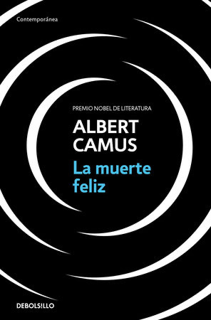
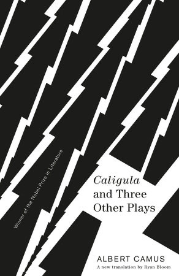
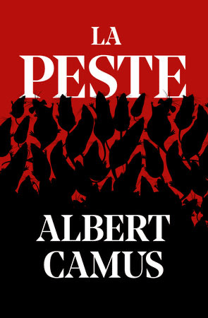
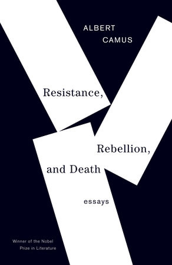

Major Works
The literary and philosophical that defined absurdism

The Stranger
L'Étranger
The story of Meursault, an emotionally detached Algerian who becomes entangled in murder and faces society's judgment.
Read More...
The Myth of Sisyphus
Le Mythe de Sisyphe
A philosophical essay exploring the absurd and arguing that suicide is not the answer—we must imagine Sisyphus happy.
Read More...
A Happy Death
La Mort Heureuse
Published posthumously, this early novel explores themes that would later appear in The Stranger.
Read More →
Caligula
Caligula
A play about the Roman emperor's brutal quest for absolute freedom after his sister's death.

The Plague
La Peste
An allegorical novel about solidarity and dignity during a plague epidemic in Oran.

Resistance, Rebellion, and Death
Résistance, Révolte et Mort
A collection of essays on political and moral issues, from the French Resistance to capital punishment.
Use arrow keys or click arrows to rotate
Complete Bibliography
Explore all of Camus's major works
-
1942Novel
The Stranger
L'Étranger
Mother died today. Or maybe yesterday; I can't be sure.
Read More → -
1947Novel
The Plague
La Peste
The evil that is in the world always comes of ignorance, and good intentions may do as much harm as malevolence, if they lack understanding.
-
1956Novel
The Fall
La Chute
I'll tell you a great secret, my friend. Don't wait for the last judgment. It happens every day.
-
1971Novel
A Happy Death
La Mort Heureuse
Should I kill myself, or have a cup of coffee?
Read More → -
1994Novel
The First Man
Le Premier Homme
He was born in a country that was not his own, and that would become so.
-
1957Stories
Exile and the Kingdom
L'Exil et le Royaume
To grow old is to pass from passion to compassion.
-
1942Essay
The Myth of Sisyphus
Le Mythe de Sisyphe
One must imagine Sisyphus happy.
Read More → -
1951Essay
The Rebel
L'Homme Révolté
I rebel — therefore we exist.
-
1939Essays
Nuptials
Noces
In the midst of winter, I found there was, within me, an invincible summer.
-
1954Essays
Summer
L'Été
There is merely bad luck in not being loved; there is misfortune in not loving.
-
1961Essays
Resistance, Rebellion, and Death
Résistance, Révolte et Mort
Freedom is nothing but a chance to be better.
-
1945Essays
Letters to a German Friend
Lettres à un ami allemand
I should like to be able to love my country and still love justice.
-
1944Play
Caligula
Caligula
Men die and they are not happy.
-
1944Play
The Misunderstanding
Le Malentendu
A man is more a man through the things he keeps to himself than through those he says.
-
1949Play
The Just Assassins
Les Justes
Real generosity toward the future lies in giving all to the present.
-
1948Play
State of Siege
L'État de Siège
I have decided to assume the task of making you happy by force.
-
1959Play
The Possessed
Les Possédés
If there is no God, then everything is permitted.
-
1937Essays
The Wrong Side and the Right Side
L'Envers et l'Endroit
There is no love of life without despair of life.
-
1962Notebooks
Notebooks
Carnets
Live to the point of tears.
Continue the Journey
Discover More Resources →